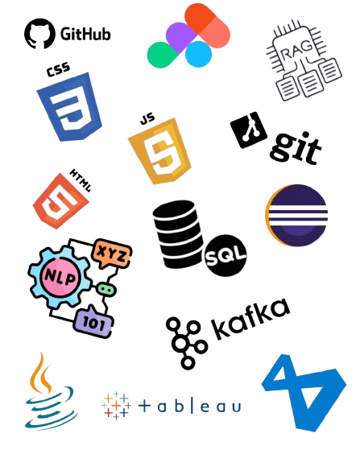

Hello, I'm
MCA Final Year Student
I'm Sandhiya Ravikumar Currently pursuing my Master of Computer Applications (MCA) in Anna University Trichy, I have developed a solid foundation in programming, data structures, and modern web technologies. During my internship, I worked on building AI-powered chatbot systems that improved response accuracy and handled real-time data efficiently.Apart from AI/ML, I enjoy working on Java development and creating responsive web applications with clean and user-friendly interfaces.I continuously explore new technologies and focus on writing efficient, maintainable code.
I am currently seeking opportunities where I can contribute my skills, learn from real-world projects, and grow as a software developer.

Internship
From January 2026 to March 2026, I worked as an AI/ML Intern at Tech Mahindra, where I focused on building intelligent applications using modern AI techniques. During this period, I developed a RAG-based chatbot system, "Campus Assist", designed to improve response accuracy by combining large language models with efficient data retrieval. I also worked with Natural Language Processing (NLP) tools and frameworks to process and analyze user queries, and gained exposure to real-time data handling concepts. This internship strengthened my understanding of AI system design, backend integration, and practical implementation of machine learning concepts in real-world scenarios.
During May 2023, I completed a Web Development internship at Inovera InfoTech, where I gained hands-on experience in building responsive web applications using HTML, CSS, and JavaScript. Throughout the internship, I developed several small-scale web pages to strengthen my front-end development skills. One of my key projects was the "7 Wonders" website, where I focused on creating a visually appealing and mobile-friendly design. This experience helped me understand real-world web development practices, improve my UI design skills, and build a strong foundation in front-end technologies.
PROJECT : 7-Wonders
AI chatbot using RAG and NLP techniques to provide accurate responses.
Collection of programs covering arrays, loops, conditions and functions.
Implemented banking and payroll systems using OOP concepts.
Responsive website built using HTML, CSS and JavaScript.
Anna University, Trichy (BIT Campus)
CGPA: 8.11M.O.P Vaishnav College for Women
CGPA: 7.5Nadar Sangha Hr. Sec. School
83.1%Nadar Sangha Hr. Sec. School
75.4%